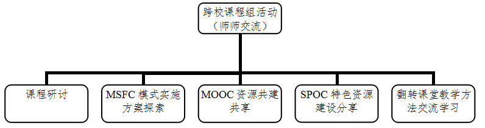

|
成果解决教学问题的方法 本成果依托我校计算机公共基础教育教学改革与质量工程建设，着重针对“高质量多样化人才需要与教育培养能力不足的矛盾”及“良好教育与资源相对短缺的矛盾”，坚持“以教育理念创新为先导，以优质教育资源和信息化学习环境建设为基础”，努力将“教育信息化、教育现代化”的国家教育事业中长期发展目标与课程教学、课堂教学全面深度融合，创新提出基于跨校课程组的MSFC混合教学模式：借助MOOC已有的“广度”资源，融合本校实际的“专度”体系，构建既满足国家教育信息化与现代化要求、又符合新媒体时代大学生个性化、多样化需求、同时与本校办学目标定位深度契合的新型教学模式。 图1 MSFC混合教学新模式 增强校际之间“师-师”交流的基础，也是解决国内高校教育资源配置不平衡、特别是西部地区高校优质资源短缺等问题的基石。 
图2 跨校课程组 我校与哈尔滨工业大学、南京航空航天大学等40所高校组建了“大学计算机”跨校课程组，以“共建共享”为纽带，以“培养目标融合、教学主体融合、课程资源融合”为目标，通过跨校开展课程研讨、MSFC实施方案探索、SPOC资源建设分享、翻转课堂教学方法交流等活动，一方面借力跨校教师间的多元化知识结构，实现了教学资源和教学方法的复合性；另一方面又借助MOOC平台，搭建起“跨空间、跨时间、跨学校、跨专业”的泛在学习环境。 （2）以“因地制宜”地“整合再造”各高校优质课程资源为“本”基于跨校课程组，以“用好MOOC、建好SPOC、抓好翻转课堂”为“三好”理念，“因地制宜”地整合各高校优质MOOC资源，解决“建设高质量课程资源难度大”的问题；再造满足本校需求的SPOC课程，解决“使用优质课程资源难度高”的问题；巧妙设计线下讨论主题，解决“线上学习成效验收难”的问题，从而使优质资源本土化成为可能。 1）整合校内外优质教学资源，建设“四库一网”的多维立体课程资源优选MOOC资源，整合本校资源，建设丰富优质课程教学资源。除跨校联合编写教材外，着重建设案例库、专题讲座库、素材资源库、试题库及在线测试网（简称“四库一网”），为开展线上自学、线下讨论、课后延伸三者联动、打破传统课堂与MOOC之间的隔离奠定了基础。 表 1基于跨校课程组的教材建设成果
2）优选“他山之石”，深入学习研讨，“用好MOOC”
MOOC优质资源主要源于985、211等高校,但由于各高校间的师资、生源、学校定位与培养目标等存在差异，因此在取“他山之石”的同时，因地制宜“用好”才是关键。首先要选择对的，结合本校实际，遴选最适宜的MOOC资源；同时应加强联系，与提供资源、使用资源的高校共同组建跨校课程组；最后再深挖所选MOOC资源内涵，取其“长处”以用好。 3）系统规划线上教学，因地制宜地“优化再造”MOOC资源，“建好SPOC”一方面立足自身需求，将MOOC资源知识点进行细分，根据专业差异及学生基础，合理“选取”可用部分，优化“整合”自建资源，“再造”深度契合本校需求的SPOC课程，确保其既具有跨校的共性，又保留本校的个性；另一方面，设计本校专有的作业、测试、答疑和讨论，通过半自觉、有监督的在线学习，保持与线下课堂的一致性。 构建对各类知识点在广度和深度上的不同排列组合，搭建配套的课程环节，使得SPOC课程既具有多校的共性，又保留有本校各师生各专业特色的个性。 4）设计配套的线下讨论主题，抓好“翻转课堂”围绕讨论主题，以学生或学生群体为中心，通过“团队合作、案例探究、主题汇报、组间讨论、教师点评、知识延伸”的过程，实现以“学生为中心，教师为引导”的“翻转课堂”。同时完善相应管理体系，一方面充分调动学生的自主学习积极性，另一方面建立完善的监控反馈机制，确保“翻转”后的课堂教学不走样，以收到实效。 （3）以融合SPOC、翻转课堂等多样化、多维度的教学模式为“纲”基于优质MOOC资源，创建特色SPOC课程，结合翻转课堂，成功构建“线上线下、课前课后、课内课外”的多维融合学习模态，精心设计“看视频、做作业、讨论、测试、汇报、提问、辩论”的多元互补方案，全面搭建泛在学习环境，实现“师-师、师-生、生-生”之间的多重交互；强化过程考核机制，建立双向教学评价体系，有效解决“教学目标达成难度大”的问题。 1)以递进式教学实施方案，引导多样化的线上、线下教学立足“三好”理念，依托“四库一网”建设，设计出“在线自学→小组讨论→课堂汇报”的递进式教学实施方案，引导学生开展“线上知识认知→案例知识探究→小组融会贯通→课堂知识内化→课后报告延伸”的渐进式学习；依托配套课程环节，强调“跨校讨论、答疑”，使学生在“跨空间、跨时间、跨学校、跨专业”的泛在学习环境中，实现“自学-互学-群学”自主式学习与线上自学、课堂讨论、课后延伸三者之间的联动。 表 2 MSFC混合教学模式的实施方案
2）探索综合性全程式考评机制，为MSFC模式下能力训练建立配套的课程评价和考核体系 从“关注学习过程管理”的角度出发，利用MOOC平台提供的数据，对学生线上视频观看、作业、讨论等方面进行评价；线下成绩则主要来自于分组报告、课堂讨论、期末考试等部分。以此方式，改变传统“一考定成败”下学生以应试为主要学习目的的不良现象，使学生转而关注和重视学习的过程，提高了学习主动性与自觉性。 3）采用“主观+客观”的教学效果评价体系进行有效的跟踪和分析师生问卷调查：一方面从学生的专业背景、资源满意度、课堂安排、教学互动及教师角色等方面入手设计问卷，结果显示大多数学生对MSFC模式持肯定态度，认为其满足了学生个性化学习的需求；另一方面从教师对资源的适应度、自我角色定位、实施效果感受等方面开展调查。结果显示，尽管MSFC模式需要教师投入更多精力，但同样得到大部分教师的接受。 课堂师生互动分析：采用弗兰德斯互动分析系统（Flanders Interaction Analysis System）对课堂实录进行师生互动分析。选取同一个专业的三个教学班，采用同课异构的方式分析比较课堂互动情况。结果显示，新模式下课堂中教师语言比例减少到传统课堂的二分之一，学生在课堂上参与讨论、交流的时间比例大大增加。 学生成绩分析：我校已经在2015、2016级共计15000名学生的“大学计算机基础”课程中进行了全国最大规模的MSFC教学实践，两个年级的期末考试平均成绩比采用传统模式的2014级学生分别提高4.8分和6.8分，且2015级学生在各级各类学科竞赛中的参与度与得奖比例也大幅提高，表明MSFC混合教学模式在提高课程教学质量与人才培养质量上取得了明显成效。 |